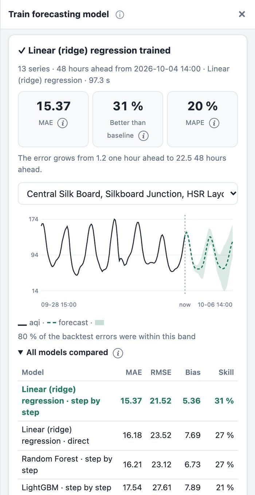

What will the air be like tomorrow? Will it rain this week?
Give LULC Fetch a table with a date column (AQI at every station, rainfall at every grid point, any value over time) and it trains a forecasting model, checks it against simple guesses, and forecasts the next hours, days or months, with an uncertainty band and a map.
Get data
Your own CSV / Excel / Parquet, or hourly AQI and weather for any points with Get AQI & weather data.
Train
One model learns from all stations together: past values, hour and season, nearby stations, weather.
Backtest
Trained on the past only, it forecasts periods it hasn't seen, spread over the last year, against simple baselines.
Forecast
The next steps for every station, with an 80 % band, as a table and a chart; saved for Forecast with a model.
Map
Put any hour on the map and krige it into a surface over the city's wards with Interpolation.
The next 48 hours at every station
Trained on 3 years of hourly AQI at Bengaluru's 13 monitoring stations (476,000 rows) with temperature, humidity, wind and rain, on 4 October 2026 at 14:00. Five machine-learning models and two simple baselines were backtested at three cut-offs across the past year; linear regression won, with an average error of 15 AQI points, 31 % better than "the same time yesterday".
- The daily rush-hour peaks continue into the forecast (dashed), with the 80 % band widening further ahead
- The error grows from 1 AQI point one hour ahead to 22 two days ahead, and the tool says so
- Training and comparing every model took 97 seconds on a MacBook

| Time | Category | Hours ahead | Forecast AQI | Low | High |
|---|---|---|---|---|---|
| 4 Oct 15:00 | Moderate | 1 | 142 | 137 | 147 |
| 4 Oct 20:00 | Moderate | 6 | 105 | 99 | 111 |
| 5 Oct 02:00 | Satisfactory | 12 | 63 | 54 | 71 |
| 5 Oct 14:00 | Moderate | 24 | 129 | 106 | 152 |
| 6 Oct 14:00 | Moderate | 48 | 125 | 88 | 161 |
Tomorrow's AQI across 273 wards, and an honest warning
The same steps for Delhi's 44 stations: the forecast for 5 October, 16:00 is kriged over the city's wards from the Library, from 245 (Poor) in the north to 317 (Very Poor) in the south. But the backtest says LightGBM's error (56) is worse than simply keeping the last value (37), and the tool shows that warning in orange.
- Why: Delhi's AQI in 2026 is higher than in any earlier year of the data (October 230 vs 129–176), so models that learned from the past expect it to fall back
- With Compare all and keep the best, the app would keep the simple baseline here, rather than a model that only looks clever

A week of rain for every 27 km of India
IMD's gridded rainfall (4,964 points, 2015–2025, measured by about 7,000 rain gauges) in one table of 20 million rows. The map shows real rain on 15 July 2025: the Western Ghats, central India and the Bay of Bengal coast. LightGBM forecasts each of the next 7 days directly, without feeding its own guesses back in, so it doesn't invent rain in dry spells.
- Average error 4.4 mm/day, 10 % better than "same as today", checked in every season
- Inputs that mattered: recent rain (36 %), where the point is (32 %), rain at nearby points (13 %)
- Large tables are sampled to 1.5 million rows for training, so a laptop copes: 46 seconds

Models
Step by step (each prediction feeds the next: smooth daily cycles such as AQI) or direct (each step from what is known now: values that are often zero, such as rain). Automatic tries the best model both ways.
What the model sees
Hourly, daily, weekly or monthly data; one place or thousands. A weather forecast in the table is used for the future; otherwise inputs repeat the last cycle.
The AQI examples use CAMS air-quality model data (about 11 km cells) with the Indian AQI computed from it, not CPCB station measurements; nearby stations can share values. Forecasts are statistical, not official warnings: for health advisories follow CPCB / SAFAR, and for weather IMD. Rainfall: IMD gridded data, Pai et al. (2014), Mausam 65(1).